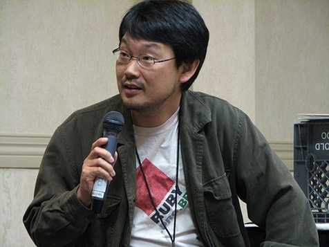

<div class="profile"><div>
  <div class="source">
Ruby (1993)
  </div>
  <div class="detail">
    
    <div class="search"><a href="http://www.google.com/cse?cx=partner-pub-6997921015773263:4467526896&ie=UTF-8&q=Yukihiro Matsumoto" target="_blank"></a> | <a href="http://en.wikipedia.org/wiki/Yukihiro_Matsumoto" target="_blank">wiki</a></div>
    <div class="name">Yukihiro Matsumoto</div>
    <div class="info"><b>Yukihiro Matsumoto</b> (まつもとゆきひろ Matsumoto Yukihiro?, a.k.a. Matz, born 14 April 1965) is a Japanese computer scientist and software programmer best known as the chief designer of the Ruby programming language and its reference implementation, Matz's Ruby Interpreter (MRI).
    <p><a href="http://en.wikipedia.org/wiki/Ruby_(programming_language)" target="_blank">Ruby</a> is a dynamic, reflective, general-purpose object-oriented programming language that combines syntax inspired by Perl with Smalltalk-like features. Ruby originated in Japan during the mid-1990s and was first developed and designed by Yukihiro "Matz" Matsumoto. It was influenced primarily by Perl, Smalltalk, Eiffel, and Lisp.</p>
    </div>
  </div>
  <div class="photo">
    
  </div>
</div></div>